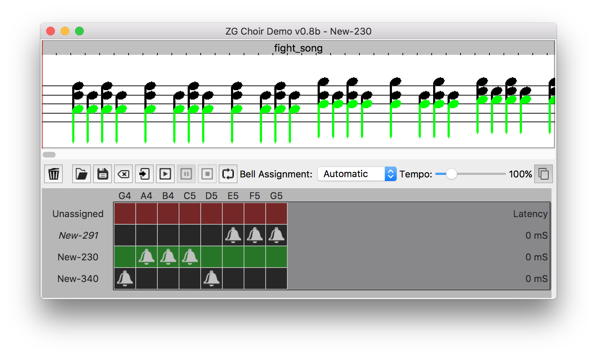
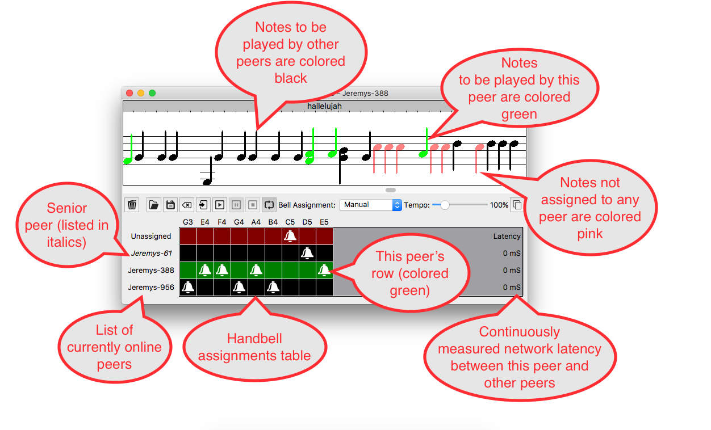
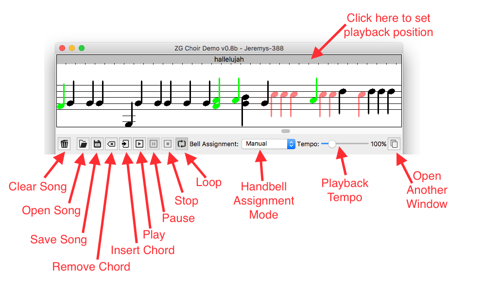

ZGChoir v1.00 6/15/2017
by Jeremy Friesner (jaf@meyersound.com)
This directory contains ZGChoir, a simple music editing and playback program whose main purpose is to demonstrate the state-replication capabilities of the ZG library.

What does ZGChoir do?
It's a music-editing and playback program for handbell music.
As a music program it's pretty basic -- you can click on the musical staff to add or remove notes to/from a song, and then use the play/pause/stop buttons to play back the song you created. It's nothing that hasn't been done better by a hundred other music-oriented applications.
So then why should I care about ZGChoir?
Because ZGChoir serves as an easy and intuitive way to visualize and demonstrate the automatic state-replication and redundancy capabilities of the ZG library.
And what are those capabilities?
The central idea of the ZG library is that we want to enjoy all the advantages of a hosted client-server architecture, without suffering from the drawbacks of running a centralized server. In particular, we'd like to emulate an idealized client-server architecture that has the following qualities:
- All clients connected to the server should always be able to "see" the server's current state at all times.
- Any changes made to the data held by the server should immediately become visible on all clients, with extremely low latency.
- The server should always be available and operational -- no downtime, ever!
- The server should be powerful enough to handle the desired load -- or if it isn't, it should be easy to make the server more powerful by adding additional hardware to it at any time.
- The server should be able to accept and integrate with newly added hardware "on the fly", without impacting any clients (see rule 3)
- The server should be able to handle the loss of existing hardware at any time, without losing data or impacting any clients (see rule 3)
- The server should be able to tolerate software and hardware crashes at any time, without losing data or impacting any clients (see rule 3)
- The system should be self-configuring and self-managing, such that little or no human supervision is required.
Most of those behaviors can be obtained by purchasing a high-quality central server, of course, but the intent of the ZG library is to give us those qualities without requiring any central server at all. Instead, a ZG-based system will consist of any number of "peer" computers, all co-located on a LAN, which co-operate with each other to mimic the behavior a single, larger, fault-tolerant computer. In particular, a system based on ZG aims to provide the following behaviors:
- There will be no central server (and thus no central point of failure!)
- Peer computers may leave the ZG system at any time -- as long as at least one peer computer still remains in the ZG system, the system will remain functional and no data will be lost.
- New peer computers may join the ZG system at any time -- a peer computer joining the ZG system will automatically have its local state updated to match the state of the system it is joining, so that within a couple seconds of joining, it's as if it had been always there all along.
- As long as the network hasn't been physically split, any changes the to system's state will be automatically, efficiently, and reliably replicated across all the peer computers in the system. That is, every peer will always contain a full local copy of the entire system state, to allow 100% redundancy.
- In any case where the system's state becomes inconsistent (between peers) for any reason (e.g. due to a temporary network outage or glitch), that inconsistency will be automatically detected and automatically rectified as quickly as possible. i.e. the system will be self-healing in the face of transient faults.
- Any system-wide decisions the software needs to make will be made in a well-defined and orderly manner -- in particular, individual peers will automatically choose a leader who will be responsible for making decisions on behalf of the group. This leader is chosen on the basis of seniority. If the leader should leave the system, another leader will be automatically chosen to take his place.
Sounds great, but I'd rather see it in action than read about it. How do I do that?
Easy! If you have multiple computers, just make sure they are all connected to same LAN, and then run ZGChoir on all of them. You should see that when you add or remove a musical note on any one of the computers, the other computers automatically update to match the change you made. (if you don't see that, you may need to adjust or disable the firewall on your computers, as the ZG system depends on being able to receive incoming UDP packets and TCP connections from the LAN in order to function)
If you only have one computer, don't worry -- you can simulate multiple computers by opening multiple ZGChoir windows at once. Click on the New-window button (at the right hand side of the window, next to the Tempo slider) to create another ZGChoir window.
Note that in addition to keeping the displayed musical notes identical on all of the peer computers, ZGChoir also automatically assigns a handbell for each note to a computer, so that when playing back a song, the computers all co-operate to play the song back as a group, much like an actual (human-staffed) handbell choir would do. By default, the system tries to keep a roughly equal number of handbells assigned to each computer, but if you prefer you can switch to Manual Bell Assignment and assign handbells to computers however you would like, by clicking on the cells in the handbell-assignment grid that appears at the bottom of the window.
What do all the controls do?
Here are callouts of all the GUI controls:


Okay, that's a fun little demo, but how would this sort of thing be useful in the real world?
To my knowledge there isn't a huge demand for robot handbell choirs out there; however the handbell choir task is nevertheless useful as an easily-understandable, easily-visualizable example of a more general type of problem-scenario with these parameters:
- There's an ongoing task that needs to be handled as reliably as possible, regardless of circumstances
- There are a number of computers that may be available at any given time, each of which may be able to handle certain parts of that task
- Any of these computers may show up or go away at any time, without warning, and the system must be able to handle those events gracefully -- i.e. it should always be able to automatically reconfigure itself to work as well as possible, given the set of computer resources that is currently available to it.
- The handling of the task may require the storage and on-the-fly updating of a certain amount of shared-state-data, which all participating computers may need to have access to in order to function. This shared-state-data must not be lost or corrupted by the failure or loss of any number of constituent computers.
- The computers must be able to work together and co-operate closely on the task -- in particular, it should be possible to co-ordinate their assigned actions based on a unified action-plan, rather than simply allowing each computer to independently decide what to do on its own, as that would often lead to conflict and chaos.
- It should be possible to split up the task and assign different parts of it to different computers, so that they can work on different parts of the task in parallel. That way the system becomes more powerful (as well as more reliable) as more hardware becomes available.
In the real world, these tasks can be fairly complex, but with ZGChoir it's easy to see if the system is meeting the above goals or not -- just open up a song file, put the playback on "loop", and then add and remove ZGChoir windows while the song is playing. To the extent you still hear all of the notes of the song being played at the proper times, regardless of what ZGChoir windows are present, the system is functioning as advertised.
How does ZG accomplish the behaviors described above?
This document is intended for non-technical users; for a more in-depth, programmer-oriented description of how the ZG library (and therefore the ZGChoir application) works, please see the README_DEVELOPERS.html file in the zg/html sub-directory of the source code archive.
That said, here is a very simplified, high-level description of how the ZG paradigm works:
- Every 150 milliseconds, each ZG peer sends out a "heartbeat" multicast packet on all network interfaces. (*)
- Each ZG peer listens for heartbeats from other ZG peers, so that each ZG peer will always know which other ZG peers are currently on line.
- If a ZG peer doesn't hear any heartbeats from a fellow ZG peer for an extended period (currently 750 milliseconds), it will assume that peer has gone away.
- ZG peers use a simple algorithm to choose a leader, or "senior peer". Generally the senior peer is the peer that has been running the ZG program longest.
- Any peer may transmit data to clients, but only the senior peer is allowed to initiate changes to the state of the ZG system's database.
- Any non-senior peer that wishes to modify the state of the ZG system's database must do so indirectly, by sending a message to the senior peer asking him to change the state.
- Once the senior peer has changed the state of the database, it will send out an update message to the other peers telling them about the change.
- Upon receiving the update message, the other peers will update their local copy of the database to match the senior peer's new state.
- Any non-senior peers that didn't receive the update message (e.g. due to a network glitch) can recover by requesting that the senior peer resend the message to them via unicast.
- Each update message contains "before" and "after" checksums of the database, which the non-senior peers use to verify that their copy of the database remains identical to the copy held by the senior peer. If the non-senior peer's database checksum is ever found to be different from that of the senior peer, the non-senior peer will recover by requesting a full retransmission of the database from the senior peer.
- If a new peer shows up while the system is running, the senior peer will transmit the current state of the database to the new peer, so that it will be synchronized to the state of the system (as if it had been part of the system from the beginning)
- Any time the set of online peers changes, the senior peer checks the table of bell-assignments (i.e. which bells are expected to be played by which peers) and adjusts it according to the current set of online peers. So e.g. if a peer that had been responsible for playing a particular bell has gone away, then that bell will be automatically re-assigned to another peer that is still on-line. In this way, the system ensures that all bells will be played, even in the event of a peer failure. The updated handbell-assignments table is replicated across all peers in the usual fashion.
- As part of its heartbeat-monitoring system, ZG also monitors the network latency of the network paths between the various peers, using an algorithm similar to the one used by ptpd. By doing this, ZG can simulate a network-wide common clock with good accuracy. The common clock allows the peers to co-operate closely together on time-sensitive tasks (such as playing different notes of a song together via handbells)
How is ZGChoir licensed?
ZGChoir, and the ZG library are both licensed under the BSD Open Source License. See the file LICENSE.TXT for details.
Who is responsible for this stuff?
The ZGChoir app and ZG library were written by Jeremy Friesner.
The MUSCLE networking library (that ZG uses as its base) was also written by Jeremy Friesner, and is copyrighted by Meyer Sound Laboratories, inc. (used via the BSD license, available for download at http://www.lcscanada.com/jaf/muscle/index.html )
ZGChoir implements its GUI and audio playback via the Qt toolkit, as provided by The Qt Company. ( https://www.qt.io )
The handbell audio samples were provided by Mark Sylvester and Markus Dimdal ( http://www.fmjsoft.com/instruments.html )
History
v1.0 - Initial public release